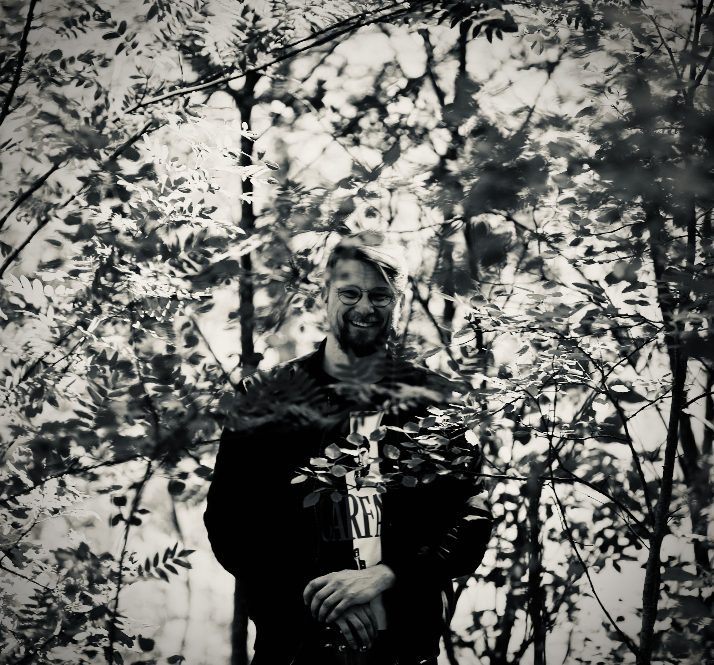
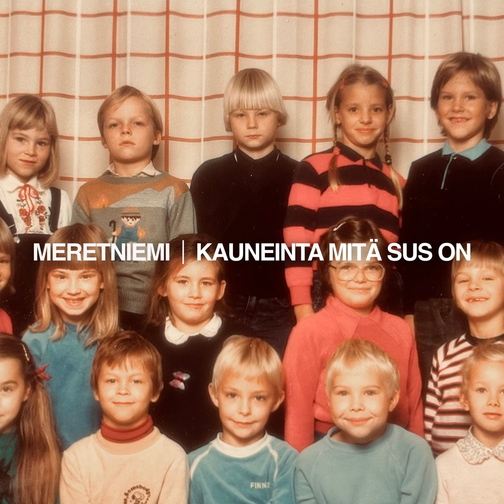
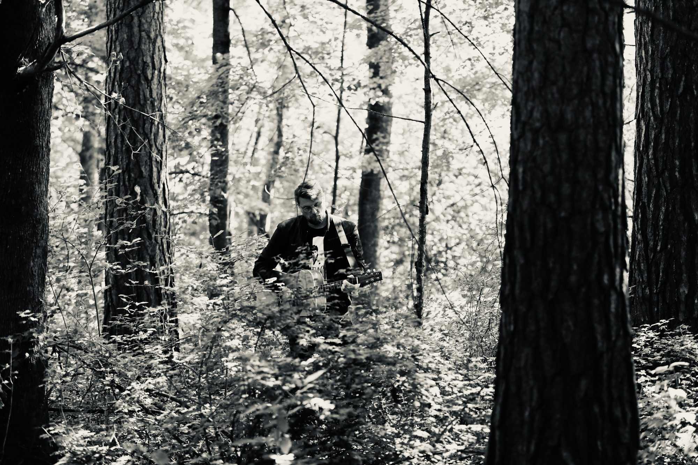
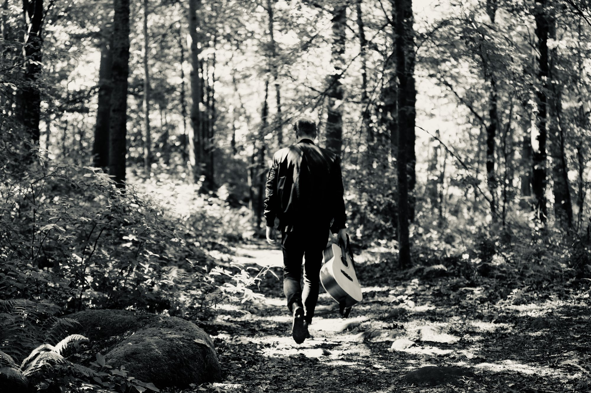

Kiva tavata. Mä oon Meretniemi.
Oon kirjoittanut lauluja toisille artisteille toistakymmentä vuotta mutta vihdoinkin sain kerättyä tarpeeksi rohkeutta laulaa niitä itse.
Arjessa vaikeat tunteet jäävät usein piiloon, koska me pelätään ettei toiset pysty ottamaan niitä vastaan. Mulle laulu on se paikka jossa voi pysähtyä niiden ääreen, vaikka vain kolmeksi minuutiksi kerrallaan.
Siksi teen lauluja.


Esikoissingle
Kauneinta mitä sus on
Laulu ilmestyy kaikkiin suoratoistopalveluihin 21. elokuuta 2026.

Pyhäkoulu
Miten kipeän kaunis ihme elämä onkaan.
Pyhäkoulu-uutiskirjeessä kirjoitan kokemuksista, joista laulut syntyvät ja siitä, mitä matkan mutkat opettavat mulle itsestäni.

Jos haluat lukea lisää ajatuksistani, tilaa Pyhäkoulu.
Kirjoitan sulle muutaman kerran kuussa, sunnuntaisin. Tervetuloa mukaan.
Voit peruuttaa milloin tahansa.